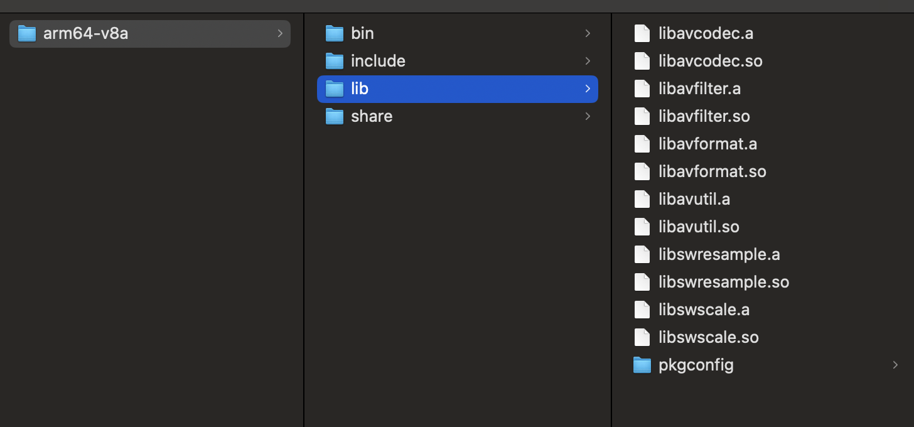
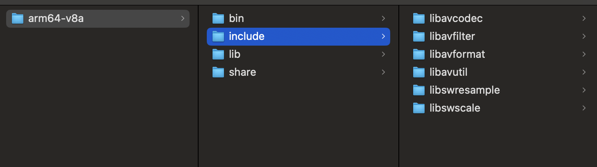
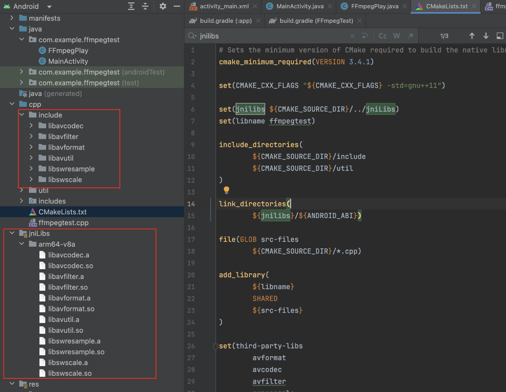
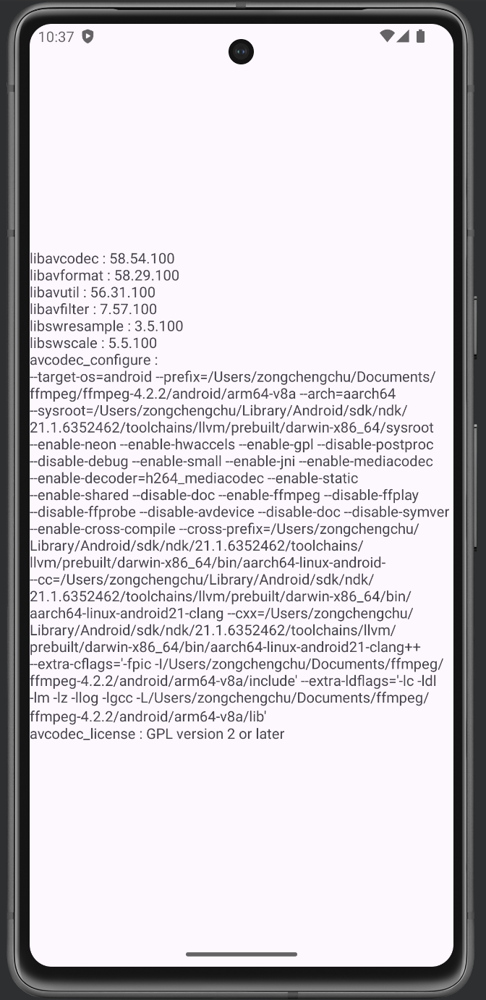

Cross compile FFmpeg on MacOS for Android
1. Prepare FFmpeg and Android NDK FFmpeg
1 2 3 4 5 6 7 8 // 1. Download FFMpeg (4.2.2 for this tutotial) https://ffmpeg.org/releases/ // 2. unzip tar -jxvf ffmpeg-4.2.2.tar.bz2 // 3. configure ./configure --disable-x86asm
Android NDK
1 https://developer.android.google.cn/ndk/downloads
2. Build In the unzipped folder ffmpeg-4.2.2, create a new shell script build_android.sh.
build_android.sh 1 2 3 4 5 6 7 8 9 10 11 12 13 14 15 16 17 18 19 20 21 22 23 24 25 26 27 28 29 30 31 32 33 34 35 36 37 38 39 40 41 42 43 44 45 46 47 48 49 50 51 52 53 54 55 #!/bin/sh NDK=~/Library/Android/sdk/ndk/26.1.10909125 ARCH=aarch64 CPU=arm64-v8a API=21 OUTPUT=$(pwd )/android/$CPU TOOLCHAIN=$NDK /toolchains/llvm/prebuilt/darwin-x86_64 SYSROOT_L=$TOOLCHAIN /sysroot/usr/lib/aarch64-linux-android GCC_L=$NDK /toolchains/aarch64-linux-android-4.9/prebuilt/darwin-x86_64/lib/gcc/aarch64-linux-android/4.9.x build_arm64 echo "\033[32m Compiling FFmpeg for $CPU \033[0m" ./configure \ --target-os=android \ --prefix=$OUTPUT \ --arch =$ARCH \ --sysroot=$TOOLCHAIN /sysroot \ --enable-neon \ --enable-hwaccels \ --enable-gpl \ --disable-postproc \ --disable-debug \ --enable-small \ --enable-jni \ --enable-mediacodec \ --enable-decoder=h264_mediacodec \ --enable-static \ --enable-shared \ --disable-doc \ --enable-ffmpeg \ --disable-ffplay \ --disable-ffprobe \ --disable-avdevice \ --disable-doc \ --disable-symver \ --enable-cross-compile \ --cross-prefix=$TOOLCHAIN /bin/aarch64-linux-android- \ --cc=$TOOLCHAIN /bin/aarch64-linux-android$API -clang \ --cxx=$TOOLCHAIN /bin/aarch64-linux-android$API -clang++ \ --extra-cflags="-fpic -I$OUTPUT /include" \ --extra-ldflags="-lc -ldl -lm -lz -llog -lgcc -L$OUTPUT /lib" make clean all make -j8 make install echo "\033[32m The Compilation of FFmpeg for $CPU is completed \033[0m" } build_arm64
To build
1 2 chmod +x build_android.sh ./build_android.sh
After successful build, we will have needed libs and headers under android/arm64-v8a


3. Test FFmpeg on Android Build a simple demo in Android studio to test if FFmpeg works.

We place the ffmpeg headers under cpp/include and all the libraries under jniLibs/arm64-v8a.
Java client code
MainActivity.java 1 2 3 4 5 6 7 8 9 10 public class MainActivity extends AppCompatActivity { @Override protected void onCreate (Bundle savedInstanceState) { super .onCreate(savedInstanceState); EdgeToEdge.enable(this ); setContentView(R.layout.activity_main); ((TextView)findViewById(R.id.text_view)).setText(FFmpegPlay.getFFmpegVersion()); } }
FFmpegplay.java 1 2 3 4 5 6 7 8 9 10 11 public class FFmpegPlay { static { System.loadLibrary("ffmpegtest" ); } public static String getFFmpegVersion () { return nativeGetFFmpegVersion(); } private static native String nativeGetFFmpegVersion () ; }
Native code
ffmpegtest.cpp 1 2 3 4 5 6 7 8 9 10 11 12 13 14 15 16 17 18 19 20 21 22 23 24 25 26 27 28 29 30 31 32 33 34 35 36 37 #include <jni.h> #include <cstring> #include "util/log.h" extern "C" {#include <libavcodec/version.h> #include <libavcodec/avcodec.h> #include <libavformat/version.h> #include <libavutil/version.h> #include <libavfilter/version.h> #include <libswresample/version.h> #include <libswscale/version.h> } extern "C" JNIEXPORT jstring JNICALL Java_com_example_ffmpegtest_FFmpegPlay_nativeGetFFmpegVersion (JNIEnv *env, jclass clazz) char strBuffer[1024 * 4 ] = {0 }; strcat (strBuffer, "libavcodec : " ); strcat (strBuffer, AV_STRINGIFY (LIBAVCODEC_VERSION)); strcat (strBuffer, "\nlibavformat : " ); strcat (strBuffer, AV_STRINGIFY (LIBAVFORMAT_VERSION)); strcat (strBuffer, "\nlibavutil : " ); strcat (strBuffer, AV_STRINGIFY (LIBAVUTIL_VERSION)); strcat (strBuffer, "\nlibavfilter : " ); strcat (strBuffer, AV_STRINGIFY (LIBAVFILTER_VERSION)); strcat (strBuffer, "\nlibswresample : " ); strcat (strBuffer, AV_STRINGIFY (LIBSWRESAMPLE_VERSION)); strcat (strBuffer, "\nlibswscale : " ); strcat (strBuffer, AV_STRINGIFY (LIBSWSCALE_VERSION)); strcat (strBuffer, "\navcodec_configure : \n" ); strcat (strBuffer, avcodec_configuration ()); strcat (strBuffer, "\navcodec_license : " ); strcat (strBuffer, avcodec_license ()); LOGCATE ("GetFFmpegVersion\n%s" , strBuffer); return env->NewStringUTF (strBuffer); }
CMakeLists.txt 1 2 3 4 5 6 7 8 9 10 11 12 13 14 15 16 17 18 19 20 21 22 23 24 25 26 27 28 29 30 31 32 33 34 35 36 37 38 39 40 41 42 43 44 45 46 47 48 49 50 51 52 cmake_minimum_required (VERSION 3.4 .1 )set (CMAKE_CXX_FLAGS "${CMAKE_CXX_FLAGS} -std=gnu++11" )set (jnilibs ${CMAKE_SOURCE_DIR} /../jniLibs)set (libname ffmpegtest)include_directories ( ${CMAKE_SOURCE_DIR} /include ${CMAKE_SOURCE_DIR} /util ) link_directories ( ${jnilibs} /${ANDROID_ABI} ) file (GLOB src-files ${CMAKE_SOURCE_DIR} /*.cpp) add_library ( ${libname} SHARED ${src-files} ) set (third-party-libs avformat avcodec avfilter swresample swscale avutil ) set (native-libs android mediandk EGL GLESv3 OpenSLES log m z ) target_link_libraries ( ${libname} ${log-lib} ${third-party-libs} ${native-libs} )
Result
